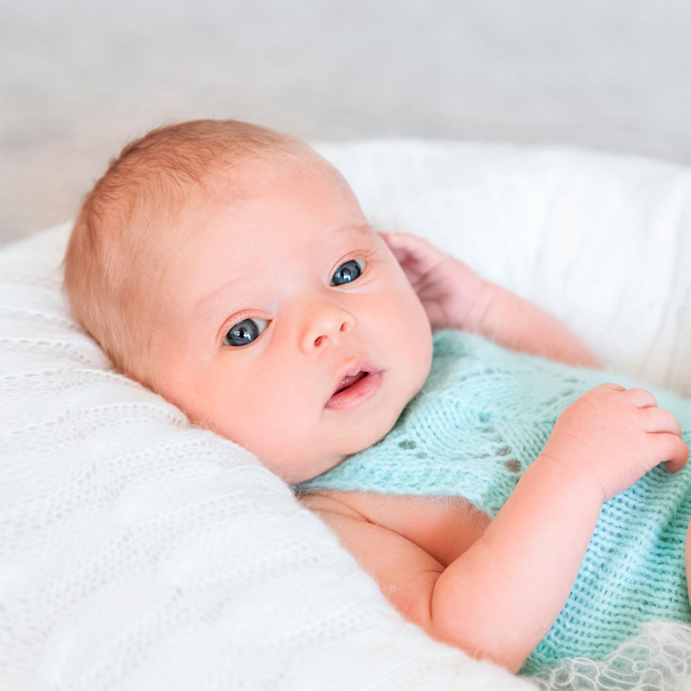

Etapas de los Bebés
Fases del Desarrollo del Bebé
Por:Sebastian Henao Fecha:Sabado 01 de Agosto de 2020
1. En Posición fetal, descubro mi cuerpo
El bebé cuando nace ha pasado por ocho, nueve meses, en posición fetal, esta posición es la que le tenemos que privilegiar cuando es recien nacido, tanto cuando lo sostemos en brazos, cuando lo colocamos sobre una superficie plana, es conveniente que el bebé se sienta contenido y que privilegiemos en las actividades del dia a dia esta posición fetal. A menudo pensamos como padres, y es una urgencia que se nos transmite cuando nos preguntan en las primeras revisiones ¿tu bebé ya empieza a sostener la cabeza?
2. Empiezo a sostener la cabeza
La fase dos es una fase importante en la que el bebe empieza a desarrollar más tono en la musculatura de su cuello,pero no es la primera. Debemos darle al bebé la oportunidad de estar en posición fetal porque en ella va a ser en la que va a empezar a descubrirse su cuerpo, es decir, el bebe cuando nace, todavia no ha se ha enterado, podemos decir que se sigue considerando parte de su mamá. Para enterarse, para darse cuenta, de que él tiene su propio cuerpecito tien que descubrirlo, y para ello debemos darle la oportunidad de que junte sus manos en el centro, al principio las va a descubrir más por la visión que todavia no esta desarollada,por la boca, cupandose el dedo, succionandose el puño, más adelante jugara con sus pies y todo esto va a ser fundamental luego para etapas posteriores, como es el volteo. Esto es importante en todos los bebés, pero primordialmente en los bebés que han nacido de forma prematura, es decir un bebé que nace a los siete meses por ejemplo, de gestación, le tocaba todavia estar en esta posicion, cerca de su mamá oyendo su latido cardiaco.
3. Me giro de lado,boca arriba y boca abajo
En la fase tres, el bebé ya ha empezado a estimular su musculatura de flexión y un poco la destensión, y ahora empiezan los giros, que es otro grupo muscular muy importante que el bebé va a empezar a experimentar que puede voltearse por si mismo. Al principio, en todas las fases veremos que lo hace como ensayo error, es decir, que el bebé de forma accidental descubre que puede hacer algo y luego repite y repite y le damos la oportunidad de que lo haga, va a ir descubrinedo que puede girar su cabeza o que hay un objeto y como ha descubierto que tiene manos con las que cogerla va girando o cuando habia descubierto sus pies, depronto, casi por azar, se le caen las piernas y, sorpresa, descubre que despues de las piernas pueden ir los brazos, pue ir la cabeza, es decir, que si le damos la oportunidad el bebé va a ir jugando con su cuerpo, en el espacio hacia un lado, hacia el otro y va a empezar a rotar.
4.Elevo mi cabeza cuando estoy boca abajo
A veces tenemos la urgencia o pensamos que sostener la cabeza es lo primero que tiene que hacer el bebé, pero llegado este punto, nos hemos dado cuenta de que tiene que primero tiene que pasar por otras fases. El bebé es capaz de elevar su cabeza cuando esta boca abajo siempre y cuando él ha sido capaz de llegar a esa posición por si mismo.Poco a poco, al principio sera más frustrante, pero poco a poco ira apoyando sus manos, sus codos, y desde ahi sera capaz de levantar no solo la cabeza, sino tambien su tronco y descubrira que si hay un objeto que quiere alcanzar y que puede ir propulsandose para llegar a él. Debemos tener claro que todo esto es cuestión de tiempo y de experimentar.
6.Me apoyo en mis codos y empiezo a reptar
Me apoyo en mis codos y empiezo a reptar,es la fase cinco y apartir de ahi es la fase seis, en la que cada vez, va a tener que hacer un esfuerzo más demandante para su troco,para que este sea estable y ya va aseparar todo el tronco de la superficie, donde estaba apoyado y se va apoyar sobre sus manos y sobre sus rodillas. Al principio experimentar el movimiento de adelante y de atras, pero se dara cuenta que si quiere coger algo todavia es más facil reptar. Más adelante ira experimentado que pasara si levanta un brazo,quiza al principio se caiga, luego se dara cuenta que si avanza el brazo y a la vez la rodilla avanza y experimentando, probando, ensayo error nuevamente, lograra avanzar y sera ya el momento en el que a nivel cognitivo el bebé esta aprendiendo que su mundo no se reduce a lo que esta cerca de él sino que el puede ir y acercarse a los objetos.
7.Me siento sin ayuda
Cuando el bebé ha dominado o ha llegado a esta fase,ya desde aqui lo unico que tiene que hacer es dejarse caer hacia uno de los lados, y ahi conseguira sentarse, con esta fase de sentarse, es una fase en la que tambien nos surgen muchas dudas,el bebé a los seis meses que normalmente introducimos la alimentación complementaria, nosotros lo estamos sentando, y esta bien,es decir, es una fase de la alimentación que necesitamos que el bebe este sentado, con una estabilidad de tronco, pero eso no quiere decir que tiene que ser la posición fundamental o predominante. Todavia le tenemos que dar tiempo para que él sea capaz de llegar a esa fase por si mismo, es decir desde la posición en cuatro, es capaz de sentarse y tener más estabilidad, si a un bebé lo sentamos de forma precoz, a los tres meses, que todavia no tiene estabilidad en su tronco, su columna se quedara más safadita, es decir,se hara una curvatura de arriba-abajo, y no podra sentarse bien sobre su pelvis.
8.Me Pongo de pie y doy los primeros pasos
A partir de aqui cuando el bebé, sea ya capaz de cambiar más de posición, de rodillas, sentado, empezara a explorar como o bien, sujetandose a una superficie estable, a una pared, a los muebles, poco a poco se pondra de cunclillas y de ahi ya experimentado, al principio con las piernas muy separadas, jugara con su centro de gravedad, arriba y abajo, y se ira aventurando a ver que es lo que pasas cuandosepara un pie, al principio caera y seguira ensayando de una u otra forma, hata que note más estabilidad y su piernas esten más cerca, más juntas, en que ya tenga una marcha estable y pueda ir avanzando por si mismo.
¿Como podemos acompañarle?
En condiciones normales, el bebé no necesita que le enseñemos,es decir, muchas veces, pecamos de querer intervenir demasiado,es una etapa muy bonita ver como se van desarrollando, y lo mejor es vivirla con la tranquilidad de que podemos acompañar este desarrollo y disfrutar consiguiendo la siguiente fase con ellos, pero permitiendole la oportunidad de experimentar. Aveces estamos ofrecieno estimulos para los que el bebé no esta preparado, otra cosa que podemos hacer es disfrutar de cada fase con ellos, observar como logra perfeccionar cada gesto, al principio ensayo error, se equivoca, ve que no era la mejor forma de conseguirlo y por ultimo fascinarnos junto a ellos en su descubrimiento, como van descubriendo sus manos, como van descubirendo sus pies, como ven o como comprueban que pueden girar. Por lo generar, acompañar su desarrollo, observar su desarrolo, a menudo más observar que intervenir, y por ultimo respetar cada una de las fases. Mediante el masaje infantil, que es tambien una herramienta excelente, para ayudarles a conocer su cuerpo, las posibilidades, el ir construyendo su esquema corporal. Hay tambien juegos y actividades adecuadas en cada momento.
María del Mar Sánchez Gonzaléz y Lorena Gutiérrez Fernández-BEBÉS EN MOVIMIENTO- whatsapp
whatsapp Instagram
Instagram Facebook
Facebook Gmail
Gmail